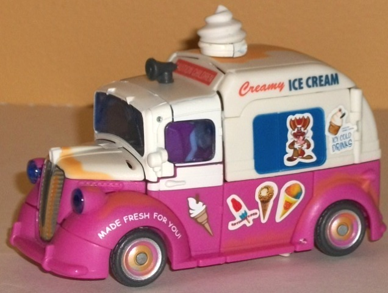
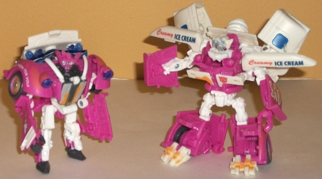
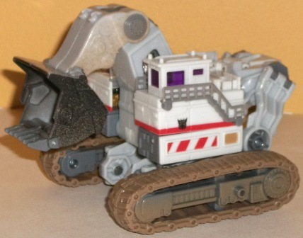
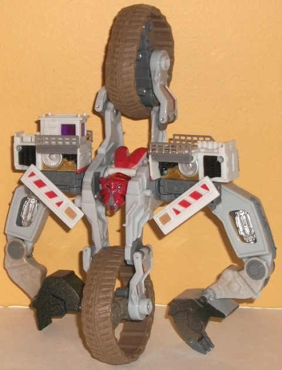

Shanghai
Showdown (Toys "R" Us Exclusive)
Shanghai
Showdown (Toys "R" Us Exclusive)
Price
: $30 U.S.
(NOTE: Because this set is composed of repaints,
this is not a full-blown review. This mainly covers any changes made to
the set and the color scheme, and merely compares it to the original versions
of these molds. For a review on the original RotF ice cream Autobot Skids
& Mudflap, go
here
. For a review on the
original RotF voyager Demolishor, go
here
.)
Autobot
Skids & Mudflap


Allegiances
: Autobot
Size
: Deluxe
Difficulty of Transformation
: Hard
Color Scheme
: White, dull soft pink,
and some dull gray, silver, moderately dark blue, light sky blue, pale
light orange, and transparent light blue
Individual Rating
: 7.6
This release of the Ice
Cream Truck Twins is more of a re-release with a sticker sheet than anything
else. The core toy is changed slightly-- there's a few patches of pale
orange on the vehicle mode to simulate "rust"-- but other than that, it's
the exact same as the mass release version. The main thing that makes this
version different are the stickers, which you can place anywhere on the
figure (they don't "have" to be in the positions shown above). Most of
them are decals of various ice cream treats "advertised" on the side of
the vehicle mode, including an "Optimus Pop", heheh. There's also a rather
demonic-looking clown eating an ice cream treat, and an "I Eat *Decepticon
Symbol*" license plate. Sorry, no "Suck my Popsicle!" sticker, for obvious
reasons. There's also an Autobot allegiance symbol sticker, which is overly
large, with no place on the toy that's an obvious place for it. Plus the
allegiance sticker
has the trademark symbol on it
, which is really
annoying and just detracts from it. I would recommend ditching that sticker.
No mold changes have
been made to the Ice Cream Twins.
Autobot Skids Tech Specs:
Strength: 4.0
Intelligence: 6.0
Speed: 7.0
Endurance: 4.0
Rank: 2.0
Courage: 8.0
Fireblast: 5.0
Skill: 3.0
Mudflap Tech Specs:
Strength: 4.0
Intelligence: 5.0
Speed: 7.0
Endurance: 5.0
Rank: 2.0
Courage: 9.0
Fireblast: 4.0
Skill: 3.0
Demolishor


Allegiance
: Decepticon
Size
: Voyager
Difficulty of Transformation
: Medium
Color Scheme
: Light greyish white,
off-white, gray, light pale brown, and some silver, pale metallic gold,
black, transparent cherry red, transparent purple, and light red
Individual Rating
: 7.2
Shanghai Showdown Demolishor
is essentially the original voyager Demolishor toy with a reversed color
scheme-- that is, basically he's white with a few red stripes instead of
red with a few white stripes. However, far from just being a "color swap"
repaint, this one's actually movie-accurate. Demolishor is the white excavator
seen near the beginning of the movie, whereas the mostly dark-red color
scheme most of "Demolishor's" toys have actually belong to Scavenger, the
excavator we see near the end of the movie (and never in its individual
robot mode) which combines with the other vehicles into Devastator. Anyways,
the color scheme works quite well on an excavator, with two nice, fairly
distinct shades of off-white being used for most of the plastic. It's a
subtle difference, to be sure, but it helps keep Demolishor from looking
too plain on the areas that have fewer paint apps. There's also some "normal"
gray and silver here and there, but again, they're just variations on the
same monochromatic theme. What really helps make this version of Demolishor
stick out are the light red bits in vehicle mode-- and robot mode, in particular--
and the metallic gold, both of which are fairly striking and contrast very
well against the predominantly white/gray scheme. (What's a bit odd and
funny is that the way it's painted, the piece behind Demolishor's head
looks like it's a "heart"-- heheh.) There's also a bit of light brown,
mostly on the treads. I get what they were trying to do-- make the treads
look "muddy"-- but being a solid, rather unappetizing shade of brown just
makes it look the rubber treads are made of... well, poo. Ick. However,
there are some REALLY nice spray "fade" paint apps on the shovel arm--
a nice black "worn metal" on the shovel part, and some brown spray "mud
splatter" on the upper part of the arm, which is a lot better use of the
color than the treads. The transparent purple and red shades also go well
with the white plastic, but they're used so little they don't factor in
much either way.
No mold changes have
been made to Shanghai Showdown Demolishor, but on the sticker sheet he
does have a Decepticon symbol "reserved" for him-- however, given that
he already has a Decepticon symbol painted on him-- and considering that
the sticker has the trademark symbol attached to it, same as the Autobot
symbol-- it's better if you don't use it.
Demolishor Tech Specs
:
Strength: 10.0
Intelligence: 6.0
Speed: 4.0
Endurance: 10.0
Rank: 8.0
Courage: 8.0
Fireblast: 8.0
Skill: 4.0
The Shanghai Showdown
set consists of admittedly medicore molds, but both are very unconventional--
which is either a plus or a minus, depending on your preference. Both have
color schemes than are slightly better than the mass release versions,
though the draw of the Ice Cream Twins comes more from their stickers than
any real change from their previous color scheme. If you like really unusual
movie-style TFs and don't have the mass-release version of the Ice Cream
Twins, this set may be a bit up your alley; otherwise, it's worth passing
over.
Shanghai Showdown Bio
:
In the crowded, twisting streets of
a Shanghai slum, a quiet night explodes in fire and debris. The massive
Decepticon Demolishor desperately smashes his way through apartments, shops
and roadways in an attempt to escape the Autobots hunting him. It's up
to Mudflap and Autobot Skids to stop him before he destroys more of the
city than can be repaired.
Review by Beastbot
Back to Transformers:
Revenge of the Fallen Index